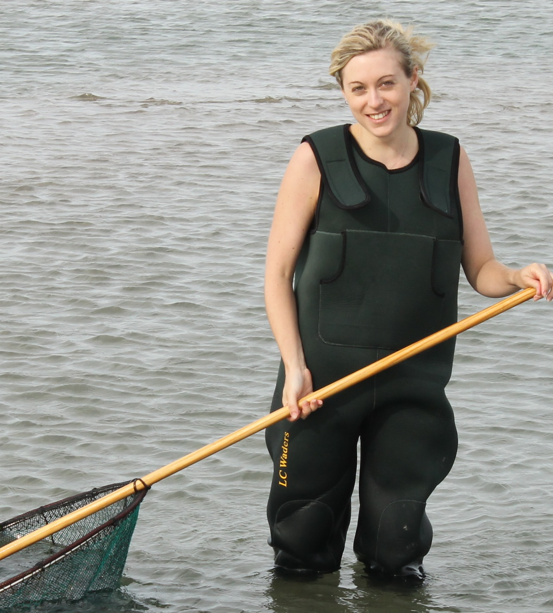

I am currently an EngD postgraduate Researcher at the University of Southampton studying the impacts of noise pollution from marine transport and transport infrastructure on fish.
My background is in Biology and Animal Behaviour (BSc University of Exeter) and Biodiversity and Conservation (MSc University of Exeter, Cornwall Campus). Whilst completing my masters I collaborated with the National Lobster Hatchery in Padstow and conducted a study on the suitability of tagging for use in fisheries stock enhancement. Now with a fondness for working in conservation and sustainable fisheries research I have joined the EngD programme at the University of Southampton to help investigate the impacts of anthropogenic noise pollution on commercial fish populations.
Alongside my EngD I have completed a Postgraduate Certification in Business Administration, and am working towards my MBA.
I became especially interested in marine conservation when I attended Farnborough 6th Form College where I undertook a PADI Open Water course in Egypt. Since then I have become fascinated with the underwater world, and want to help mitigate the impacts humans can have on marine ecosystems, and the implications of those impacts on the fisheries industries.
Promoting public awareness of anthropogenic impacts is difficult. The easiest way to disseminate information is through online and social media, and so I learnt to code.
Coding is now a huge part of my work and I want to enter a career in the tech industry.
I am a keen coder with experience in several languages including: HTML, CSS, JavaScript, Java, PHP, SQL, Ruby, and Python, and a basic knowledge of Linux.